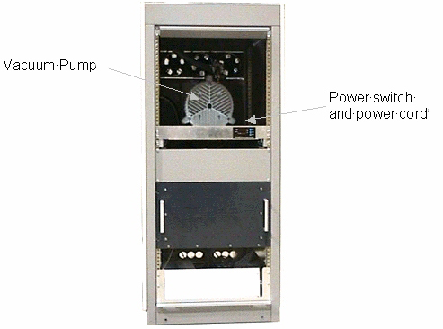
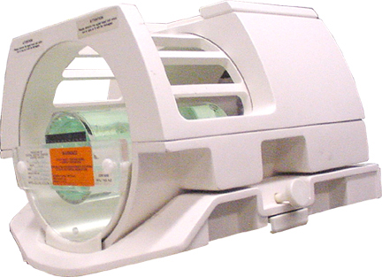
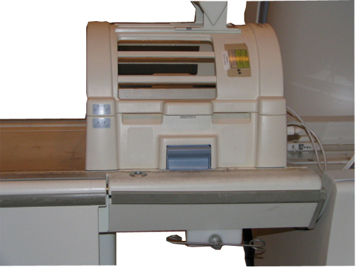
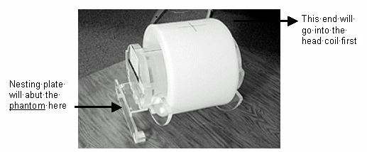
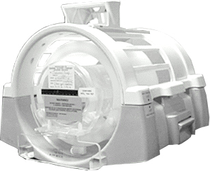
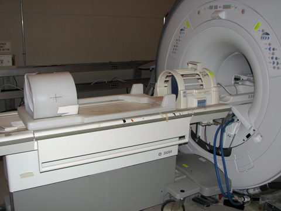
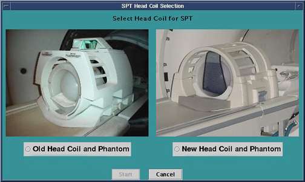
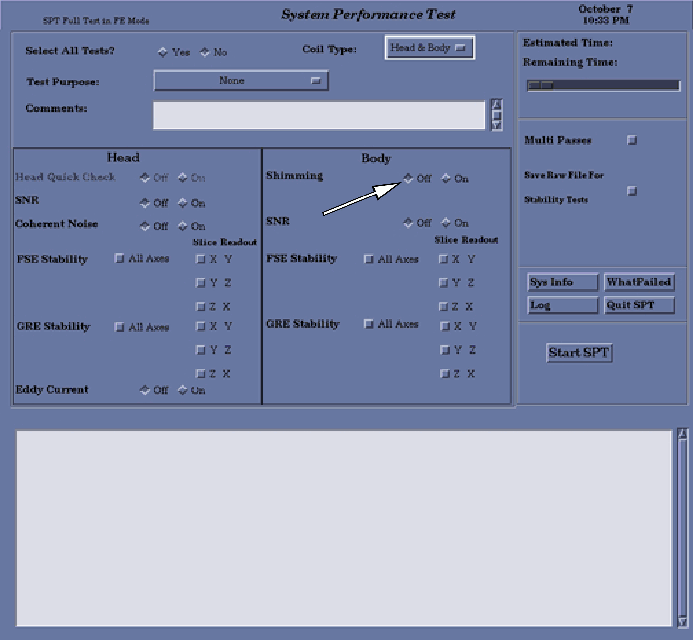

- 00000018WIA30439F20GYZ
- id_131060721.11
- Jul 5, 2019 10:46:05 PM
SPT Full Test Mode Procedure
Prerequisites
| Required persons | Preliminary requirements | Procedure | Finalization |
|---|---|---|---|
| 1 | Not Applicable | 2 hours | Not Applicable |
| Item | Quantity | Effectivity | Part number | Manufacturer |
|---|---|---|---|---|
| DQA Phantom (shipped with system) | 1 | - | - | - |
| Nesting Plate | 1 | - | - | - |
| Body TLT Sphere with Body Short Loader Shell | 1 | - |
See FRU manual | - |
| Condition | Reference | Effectivity |
|---|---|---|
|
Cancel out of any previous exams. Click on End Exam. | - | - |
|
Remove any patient positioning devices before placing the nesting plate or other phantoms on the table. In particular, remove patient restraints or other devices that attach to the tracks along the edges of the cradle. | - | - |
SPT Full Test Mode for 1.5T
Procedure
- Note:Disable the vacuum pump. (TwinSpeed only)
See SPT Full Test Mode for 3.0T for SPT Full Test Mode for 3.0T.
- Disable the TwinSpeed vacuum pump if SPT FSE or FGRE stability scans are going to be run. Failing to disable the vacuum pump may result in SPT stability failures.
- Remove the front cover from TwinSpeed Accessory Cabinet (TAC),
and place the power switch on the right side of the vacuum pump (near
the power cord connection) in the OFF position.
(May also remove the power cord from the pump.)
Figure 1. Vacuum Pump Inside TwinSpeed Accessory Cabinet 
- Note:(For 11x 1.5T systems) Set up Head Coil
For 12x 1.5T systems, proceed to Step 3.
- If using the older classic Signa Head Coil, put it on the patient table. If using the newer Split Head Coil, proceed to Step 2.c.
- Make sure the DQA phantom is placed in the coil with the filler
plugs at the rear of the coil.
Figure 2. Older Style Head Coil 
Note:If using the split-top head coil on an older Signa table, do not try to align the coil with the double notches on the old style table. The split-top head coil needs to be positioned on the table as close as possible to the LPCA. Failure to correctly position the head coil will result in SPT failures due to inability to use full travel distance. For all software versions prior to 14.x, verify the ability to travel from the landmark on the head coil to the crosshairs on the body loader prior to starting SPT.Figure 3. Position Split-Top Head Coil in Superior Location on Older Signa Table 
- If using the newer Split Head Coil, place the coil on the patient
table. The Split Head Coil Phantom fits in the new head coil only
one way.
Figure 4. New Phantom Orientation 
- Place the phantom in the head coil.
Figure 5. New Phantom Position in Head Coil 
- Position the Short Loader with the Body Sphere inside on the nesting plate. (The label on the top of the short loader indicates the correct orientation.)
Figure 6. Short Body Loader with Body Sphere Positioned on Nesting Plate 
- Landmark on the axial line of the phantom in the head coil.
- As a final positioning check, ensure:
-
Head coil is completely in position.
-
Nesting plate is up against the head coil holder.
-
- Proceed to Step 4.
-
(For 12x 1.5T systems) Set up the head coil.
- For the new Split Head Coil, proceed as follows (for the old
coil, proceed to step Step 3.b):
-
Place the Split Head Coil on the patient table.
-
Place the head spherical phantom and loader in the head coil.
-
Place the nesting plate on the patient table flush against the head coil positioner. Proceed to step Step 3.c.
-
- Coil Setup for Old Head Coil
-
Insert the DQA Phantom into the head coil.
-
Turn on the alignment light, and move the cradle until the alignment light is centered using the marks on the phantom for a reference.
-
Remove the DQA phantom and replace it with the TLT Sphere.
-
- Position the Short Loader with the Body Sphere inside on the nesting plate.See Figure 6.
- Landmark on the axial line of the phantom in the head coil.
- As a final positioning check, ensure:
-
Head coil is completely in position.
-
Nesting plate is up against the head coil holder.
-
- For the new Split Head Coil, proceed as follows (for the old
coil, proceed to step Step 3.b):
- Invoke SPT full test mode.
Notice Note:To start the SPT Test tool from the Service Browser, follow the steps in the figure below.We do not recommend running the LVShim as part of SPT. Do not select the LVShim option when you execute the SPT. See Figure 10.
Figure 7. Start SPT Test Tool 
-
(For 11x systems) In the SPT Head
Coil Selection screen shown in the figure below, choose
the correct coil.
Figure 8. Select Head Coil for SPT Screen 
-
(For 12x systems) In the SPT Head
Coil Selection screen, select the correct coil.Note:
The 1.5T systems use the spheres with the green solution.
Figure 9. Select Head Coil for SPT Screen 
- Note:Select the head coil currently in use, and click on Start. An SPT Test menu displays in a window on the desktop.
We do not recommend running LVShim as part of SPT. Do not select the LVShim option when you execute the SPT. See the figure below.
Figure 10. Field Engineer Test Selection - Full Test Example 
- To exit SPT, click the Quit SPT button.
- For TwinSpeed only: When finished with SPT, position the power switch on the vacuum pump to the ON position, and replace the cover on the front of the TAC.
- To view SPT results, select the Utilities tab on the Service Browser, and select Report Manager.
- Enter the Report Manager password and press Enter. (For more information, see Report Manager Tool.)
- If appropriate, return to SPT for more selections.
SPT Full Test Mode for 3.0T
Procedure
- Note:Disable the vacuum pump. (TwinSpeed only)
The 3T systems use the spheres with the pink solution.
- Disable the TwinSpeed vacuum pump if SPT FSE or FGRE stability scans are going to be run. Failing to disable the vacuum pump may result in SPT stability failures.
- Remove the front cover from TwinSpeed Accessory Cabinet (TAC),
and place the power switch on the right side of the vacuum pump (near
the power cord connection) in the OFF position.
(May also remove the power cord from the pump.)
Figure 11. Vacuum Pump Inside TwinSpeed Accessory Cabinet
-
(For 11x 3T systems) Set up the head coil.
- Note:If using the older classic Signa Head Coil, put it on the patient table. If using the newer Split Head Coil, proceed to step Step 2.c.
For 12x 1.5T systems, proceed to Step 3.
- Make sure the DQA phantom is placed in the coil with the filler
plugs at the rear of the coil.
Figure 12. Older Style Head Coil Note:If using the split-top head coil on an older Signa table, do not try to align the coil with the double notches on the old style table. The split-top head coil needs to be positioned on the table as close as possible to the LPCA. Failure to correctly position the head coil will result in SPT failures due to inability to use full travel distance. For all software versions prior to 14.x, verify the ability to travel from the landmark on the head coil to the crosshairs on the body loader prior to starting SPT.Figure 13. Position Split-Top Head Coil in Superior Location on Older Signa Table - If using the newer Split Head Coil, place the coil on the patient
table. The Split Head Coil Phantom fits in the new head coil only
one way.
Figure 14. New Phantom Orientation - Place the phantom in the head coil as shown in the figure below.
Figure 15. New Phantom Position in Head Coil - Position the Short Loader with the Body Sphere inside on the nesting plate. See Figure 16.
- Landmark on the axial line of the phantom in the head coil.
- As a final positioning check, ensure:
-
Head coil is completely in position.
-
Phantom is all the way in the head coil.
-
Nesting plate is up against the head coil holder.
-
-
(For 12x 3T systems) Set up the head coil.
- Place the head coil on the patient table.
- Place the head spherical phantom and loader in the head coil. (See Figure 16.)
- Place the nesting plate on the patient table flush against the head coil positioner.
- Position the Short Loader with the Body Sphere inside on the nesting plate. (See Figure 16.)
- Landmark on the axial line of the phantom in the head coil.
- As a final positioning check, ensure:
-
Head coil is completely in position.
-
Phantom is all the way in the head coil.
-
Nesting plate is up against the head coil holder.
Figure 16. Phantom and Head Coil Lined Up on Nesting Plate -
- Invoke SPT full test mode.
Notice Note:To start the SPT Test tool from the Service Browser, follow the steps in the figure below.We do not recommend running LVShim as part of SPT. Do not select the LVShim option when you execute the SPT. See Figure 18.
Figure 17. Start SPT Test Tool - Select the head coil currently in use, and click on Start. An SPT Test menu displays
in a window on the desktop.
Figure 18. Field Engineer Test Selection - Test Example - To exit SPT, click the Quit SPT button.
- For TwinSpeed only: When finished with SPT, position the power switch on the vacuum pump to the ON position, and replace the cover on the front of the TAC.
- To view SPT results, select the Utilities tab on the Service Browser, and select Report Manager.
- Enter the Report Manager password and press Enter. (For more information, see Report Manager Tool.)
- If appropriate, return to SPT for more selections.
Finalization
Procedure
- Perform a TPS Reset after completing SPT to return the system to a normal working state.
- If for any reason an SPT scan is aborted, shut down and reboot the system.